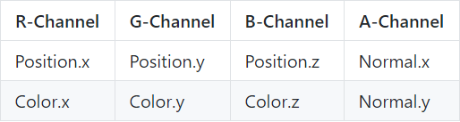

Introduction
This project implements Clustered Deferred and Clustered Forward Shading Techniques. These techniques improve performance for scenes with many dynamic lights.
Typical forward shading involves looping over every object and then looping over every single light in the scene to accumulate the light energy on the object. If the number of lights is high, this can lead to a drastic drop in performance. We need to cull lights so that only those lights which actually contribute energy on a fragment are looped over. Clustering is a solution that bins lights into 3D buckets based on what the light can influence. Deferred shading is an improvement over this by only dealing with the fragments with the smallest z-depth, which is accomplished via a culling stage and using a "g-buffer".
These solutions allow you to have an enormous number of dynamic lights in the scene when optimized. This project can run over 2100 lights at 60 FPS.
Performance Analysis
The performance analysis of deferred shading vs. forward plus shading vs. forward shading is explained pretty well on the github repository .
Technical Approach
Clusters
Clustering is the binning technique used in this project to store lights in a spatial data structure based on their area of influence. Clusters are very similar to the cells that make up a 3D grid, where each cell in the grid represents a certain spatial boundary and does not overlap any other cell of the grid. A collection of clusters arent simply called a grid because they are made by slicing up the camera view frustum, which makes each cluster a tiny frustum instead of a cuboid.
Clusters are used to determine if a specific light influences any part of the volume that the cluster occupies. This means that a datastructure representing the cluster would store all the lights that affect that cluster. A light can be stored in multiple clusters.
It is surprisingly hard to do frustum based culling simply due to the ease with which false positives can pop up. There are multiple proven techniques that can be used to solve such issues. For example: fast frustum culing .
The clusters used in this project were uniformly spaced in z, and were slicing the view frustum into 15 sections along each dimension. The number of slices per plane affects the size of the cluster buffer and so is a good number to play around with. Additionally it may be beneficially to have exponential splitting or some other way of splitting up the z dimension, because usually in real-time applications things in the distance are sampled at lower resolutions. This is something that can and has been taken advantage of, for example the game doom implemented an exponential divisioning of the z dimension.
In WebGL, we can't simply create buffers to store data that can be accessed by the shaders. Thus, we store our data by packing it into textures. The textures in this project have been laid out with a single cluster's data occupying an entire column. It would be more memory coherent to implement it such that the cluster's data occupies an entire row. Within the column itself however we have packed data relatively tight. Every pixel stores four floats. The first float in every column is the number of lights in that cluster. The floats that follow are just the light indices in no particular order.
This packing into textures additionally means that we have to unpack data in the shader itself. Additionally since we only store light indices we also need to store all of the lights in the scene in another texture. This texture also has to be packed and unpacked.
Clustered Forward Plus Shading
Forward Plus is a shading technique that involves culling lights in some fashion and then binning them in either 2D tiles or as was done in this project 3D clusters. This means that there is overhead for light culling but the payoff during shading is enormous. Culling lights means every fragment loops through only a select few lights in relation to the entire scene instead of all the lights.
The preformance can be many folds as the number of lights in the scene increase. About 17-18 times at 500 lights as compared to forward shading.
The graphs show at a 1000 lights that forward plus is only about 5 times faster than forward shading. This is much better ofcourse but isn't as great as 17. This might be because of the cluster texture not fitting well into memory leading to many expensive calls to global memorry during shading.
Clustered Deferred Shading
It is typical to end up with multiple fragments at verious depths for every pixel in the fragment buffer for a regular scene. It seems like an obvious solution to only calculate complex shading calculations including lighting for only the top most fragment,ie the one that is actually seen and has the lowest depth.
Deferred shading is an improvement over forward plus shading. It has 2 render passes, the first one looping over fragments and creating a "g-buffer" that stores only the topmost fragment, ie the one with the smallest depth, and storing the data associated with it in a single or multiple buffers. This data can be whatever is required for shading such as positions, colors, normals, depth, specular, etc.
Not having to loop over all the the fragments for a pixel and perform light accumulation on all the fragments leads to massive performance boosts even over forward plus. This boost is anywhere from 2 to 8 times more. The performance can be improved by using smaller and more data-coherent textures and so compact g-buffers.
The performance of both clustered forward plus and deffered shading is heavily dependent upon the size of the cluster buffer which is based mainly on how many clusters and the maximum number of lights that can be stored in the cluster. Making this texture data coherent goes a long way towards making the shading technique run really fast. This however is hard to know intuitively and was more of a guessing process.
Optimizations
Compressed G-Buffer
Reducing the number of g-buffers (or how many components make up the g-buffer) helps make deferred shading faster which can be done by compactly storing data in them. Colors often don't need the alpha component, normals can be reconstructed simply from 2 of their components, data can be stored in 24bit floats instead of 32 bits, are just some of the ways to achieve this compression.
This project implemented the following layout for the 2 g-buffers used:

2-Component Normal
If we assume the magnitude of a normal is one, which it usually is because its simply a direction vector. We can reconstruct the z-value of the normal from its x and y values. The magnitude of a vector is defined as the square root of x squared + y squared + z squared. This formula gives us the magnitude of z. The sign of z is positive in camera space for all the fragments that we can see. Using these 2 bits of information we can easily reconstruct the normal from only its x and y components.
Debug Views
The debug view for the project can be found on the github repository .